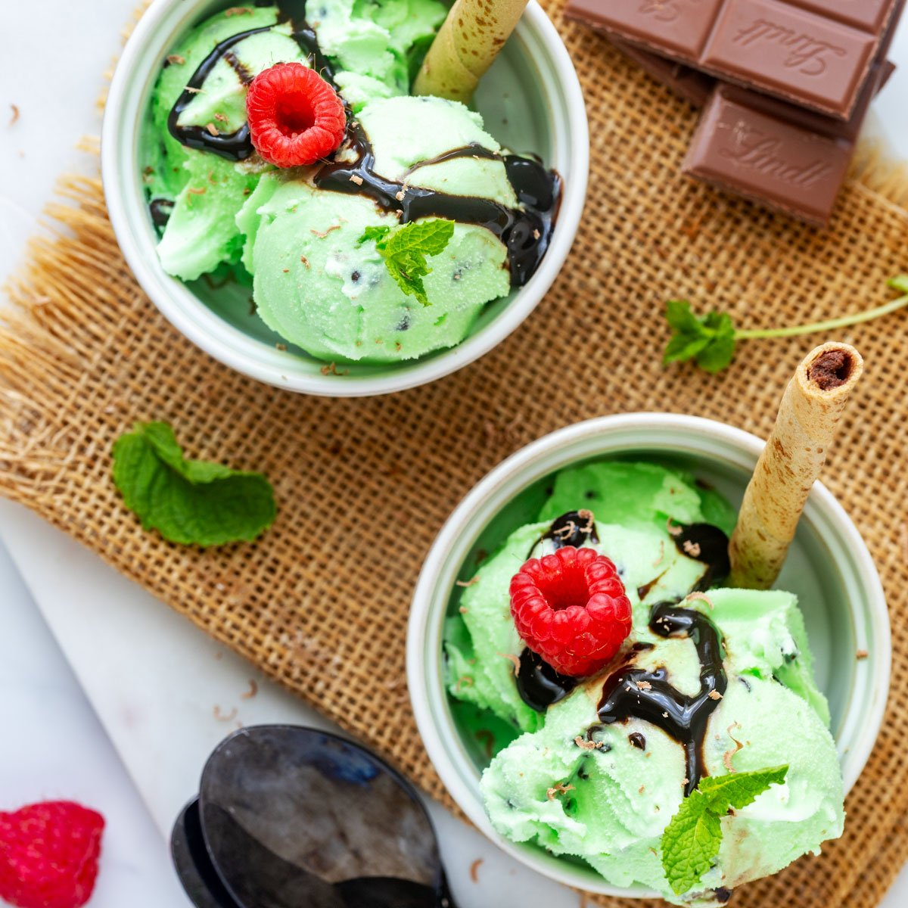

Descripción e Historia del mejor helado del mundo
El helado de menta con chips de chocolate ha sido uno de los favoritos de generaciones. Su frescura única de menta se combina perfectamente con la suavidad del helado y el crujir de los trozos de chocolate. Esta deliciosa combinación ha conquistado los paladares de muchos desde que fue creado en el año 1930, y sigue siendo un clásico atemporal.
En nuestra receta especial, usamos solo menta fresca y chocolate de la mejor calidad, asegurándonos de que cada cucharada sea una experiencia inigualable.

Sobre Nosotros
En Delicias Frescas S.A., nos apasiona crear helados que no solo satisfacen el paladar, sino que también traen momentos de alegría a cada persona que los prueba. Desde nuestra fundación en 1972, hemos trabajado incansablemente para ofrecer helados artesanales de la mejor calidad, utilizando ingredientes frescos y naturales en cada receta. ¡Cada sabor cuenta una historia de tradición, innovación y amor por lo que hacemos!
Nos especializamos en una amplia gama de sabores, pero nuestro orgullo es el helado de menta con chips de chocolate, una receta secreta que ha sido perfeccionada a lo largo de los años. Creemos que el verdadero sabor de la menta solo puede conseguirse con hojas frescas, y combinarlas con el crujir del mejor chocolate es un arte que llevamos con honor.
Lo que nos distingue no es solo la calidad de nuestros helados, sino también nuestro compromiso con la sostenibilidad. En Delicias Frescas, utilizamos envases ecológicos y promovemos prácticas responsables en toda nuestra cadena de producción. Nuestra misión es hacer que cada helado que produzcan no solo sea delicioso, sino también un paso hacia un futuro más verde.
Nos enorgullece ser una empresa familiar que sigue los mismos principios de hace más de 50 años: calidad, frescura y, sobre todo, la pasión por ofrecer momentos dulces e inolvidables a nuestros clientes. Cada cucharada que disfrutes es una muestra de nuestro esfuerzo y dedicación.